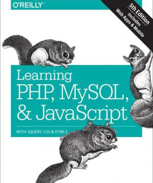

Enjoy ebooks
through your local public library
Learning PHP, MySQL & JavaScript: With jQuery, CSS & HTML5

Nixon Robin, 2018
Build interactive, data-driven websites with the potent combination of open source technologies and web standards, even if you have only basic HTML knowledge. In this update to this popular hands-on guide, you’ll tackle dynamic web programming with the latest versions of today’s core technologies: PHP, MySQL, JavaScript, CSS, HTML5, and key jQuery libraries. Web designers will learn how to use these technologies together and pick up valuable web programming practices along the way—including how to optimize websites for mobile devices. At the end of the book, you’ll put everything together to build a fully functional social networking site suitable for both desktop and mobile browsers.
What You'll Learn
- Explore MySQL, from database structure to complex queries
- Use the MySQLi extension, PHP’s improved MySQL interface
- Create dynamic PHP web pages that tailor themselves to the user
- Manage cookies and sessions and maintain a high level of security
- Enhance the JavaScript language with jQuery and jQuery mobile libraries
- Use Ajax calls for background browser-server communication
- Style your web pages by acquiring CSS2 and CSS3 skills
- Implement HTML5 features, including geolocation, audio, video, and the canvas element
- Reformat your websites into mobile web apps